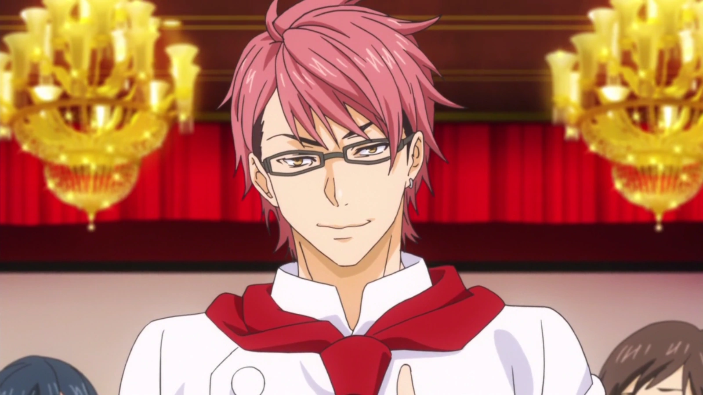

СОЮЗНИКИ СОМИ
- Такумі Альдіні — італійський кухар, який став одним із найближчих союзників Соми в академії Tōtsuki.
- Ікумі Міто — харизматична студентка академії Tōtsuki, відома як «Майстер м’яса».
- Субару Мімасака — кулінар, який копіює страви своїх суперників, вдосконалюючи їх та перемагаючи в поєдинках.


СУПЕРНИКИ СОМИ
- Рьо Курукіба — спеціаліст з морепродуктів, відомий своєю агресивною технікою приготування.
- Акіра Хаяма — майстер спецій з надзвичайно чутливим нюхом, що дозволяє йому створювати унікальні страви.
- Аліса Накирі — молекулярний кухар, яка часто суперничає з Сомою через різні підходи до кулінарії.


ЦІКАВІ ФАКТИ ТА РЕЙТИНГИ
- Сома Юкіхіра часто використовує інгредієнти несподіваним чином — це стало його фішкою серед фанатів.
- Мегумі Тадокоро колись випадково спалила кухню — сцена дуже популярна серед фанів.
- Аліса Накахіра любить створювати "наукові" десерти з точністю лабораторних експериментів.
- Рьо Кудо — чемпіон кулінарного турніру, але фанати обожнюють його комічні моменти.

УЧНІ ЕЛІТНОЇ ДЕСЯТКИ
- Терунорі Куга — лідер китайського кулінарного товариства, відомий своєю дисципліною та майстерністю в приготуванні страв Сичуанської кухні.
- Ейцудзі Ейзан — другокурсник з великою групою прихильників, який здобув популярність завдяки своїм бізнес-консультаціям та кулінарним здібностям.
- Ейші Цукаса — талановитий кулінарний, відомий своєю точністю та досконалим поєднанням смаків у десертах.
- Тоске Мегішима — третій курсник, відомий своєю прихильністю до рамену та опором до концепції Shokugeki.


ВПЛИВОВІ ДОРОСЛІ ПЕРСОНАЖІ
- Юкіхіра Джойчіро — батько Соми, власник сімейного ресторанчику, надихає Сому на експерименти та самовдосконалення у кулінарії.
- Накірі Сензаемон — дідусь Еріни Накірі, відомий кулінарний критик з надзвичайно вимогливим смаком, формує високі стандарти академії Tōtsuki.
- Кодзіро Шіномія — досвідчений шеф-кухар та один із старших наставників у академії Tōtsuki, відомий своєю строгістю і бездоганним виконанням класичних кулінарних технік. 
- Хінако Інуї — досвідчена кухарка та наставниця, відома своєю делікатною технікою приготування та підтримкою молодих талантів.